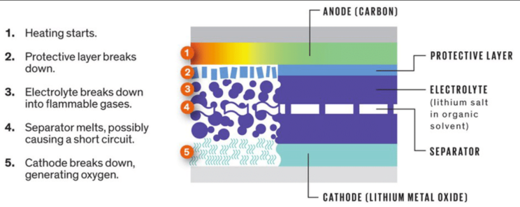
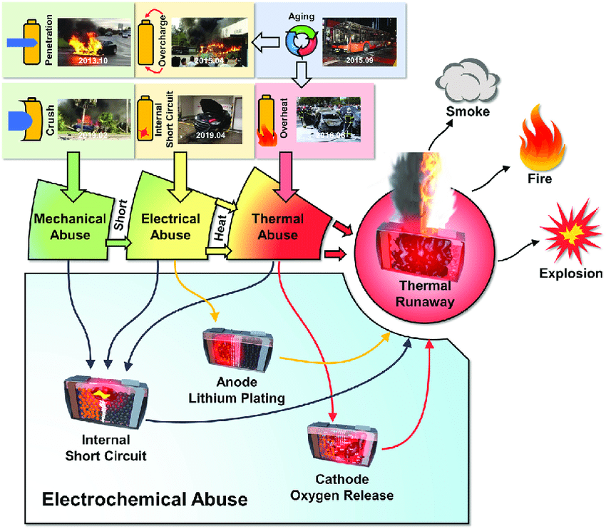
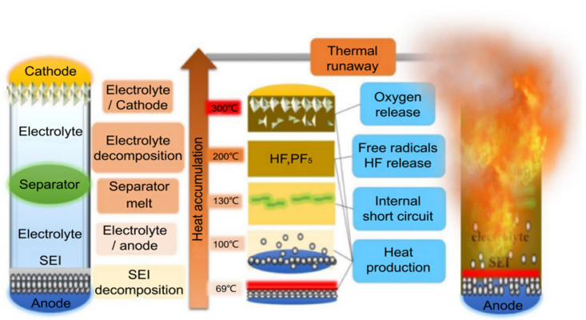
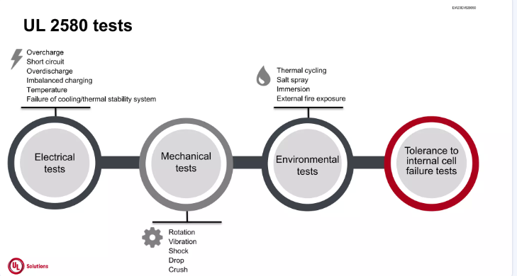
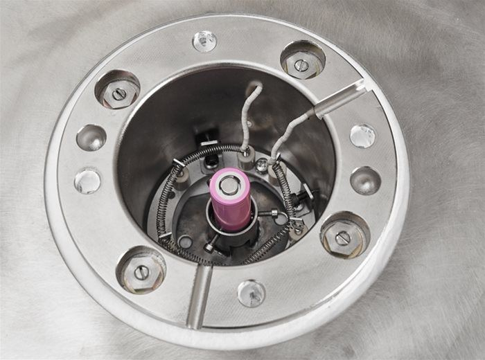
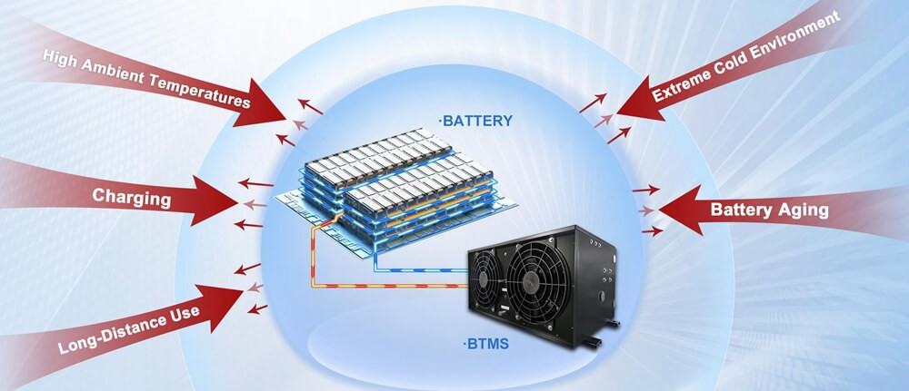
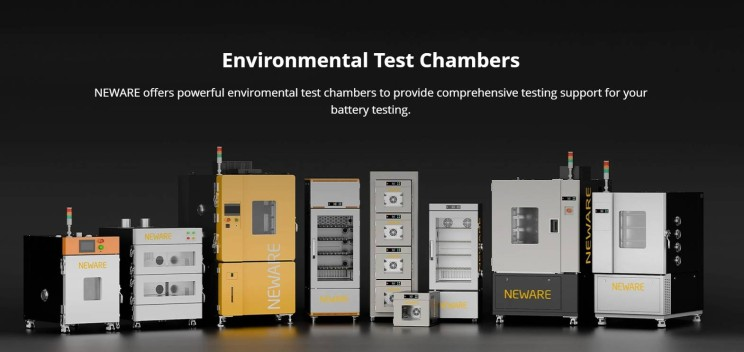

Thermal runaway in lithium-ion batteries represents one of the most significant safety challenges in the rapidly expanding electric vehicle and energy storage sectors. As recent testing demonstrates, when batteries exceed critical temperature thresholds, they can progress into catastrophic failure events with the potential for fires and explosions.
This newsletter explores current methodologies, standards, and best practices for battery testing to help manufacturers and engineers prevent thermal runaway incidents while ensuring battery systems meet rigorous safety requirements.
Understanding Thermal Runaway in Battery Systems
Thermal runaway occurs when a battery cell experiences uncontrolled, self-reinforcing exothermic reactions that rapidly increase temperature beyond safe operational limits. This dangerous process typically begins when a cell exceeds approximately 80°C, potentially leading to fire or explosion with serious safety implications. The phenomenon can originate from manufacturing defects, internal shorts, mechanical damage from impacts, or exposure to extreme conditions outside the battery's operating window.

Recent developments in thermal runaway testing have been documented in real-world scenarios. Just this week, on May 7, 2025, a controlled thermal runaway test was conducted on a 5 Ah 21700 lithium-ion cell, demonstrating how heat, pressure, and failure modes interact during catastrophic battery failure. Such practical demonstrations highlight why rigorous testing protocols are essential for battery safety.
Battery Abuse Testing Fundamentals
- Mechanical Abuse: Physical damage such as nail penetration, crushing, or impact can deform the cell structure, causing direct contact between the anode and cathode, or between current collectors and electrodes. The size of a penetrating filament, for instance, directly influences the magnitude of the ISC current and subsequent heat release.
- Thermal Abuse: Excessive temperatures can cause the separator—the insulating layer between the anode and cathode—to melt or shrink, leading to an internal short.
- Electrical Abuse: Overcharging can lead to the formation of lithium dendrites, which are metallic lithium structures that can grow through the separator and create an internal short.
- Manufacturing Defects: Contaminants introduced during cell assembly or imperfections in cell components can also create pathways for ISCs.

Thermal Propagation Testing Methodology
- Initiation: An abuse condition (ISC, overcharge, mechanical damage, external heating) causes localized heating within the cell.
- SEI Layer Breakdown: As temperatures rise (often around 80-120°C, depending on chemistry), the SEI layer on the anode begins to decompose. This is an exothermic reaction and releases flammable hydrocarbon gases (e.g., ethylene, propylene) and carbon dioxide. This early gas release can serve as a warning but also contributes to a flammable atmosphere.
- Separator Melting/Failure: Conventional polyolefin separators typically melt between 130-180°C. Separator failure leads to a loss of insulation between the anode and cathode, resulting in more extensive internal short-circuiting and accelerated heat generation. Before thermal runaway, a sharp increase in battery electrical resistance is often observed due to electrolyte depletion, porosity reduction of electrodes, and separator shutdown.
- Electrolyte Decomposition: At higher temperatures, the organic liquid electrolyte starts to decompose, producing more flammable and potentially toxic gases. This increases internal cell pressure significantly.

- Electrode Material Decomposition: Cathode and anode materials begin to decompose at their respective critical temperatures. These reactions are often highly exothermic and contribute substantially to the rapid temperature increase. For instance, the cathode material may release oxygen, which can then react with the flammable electrolyte, further intensifying the event.
- Cell Venting and Rupture: The buildup of internal pressure from gas generation eventually forces the cell's safety vent to open, releasing hot gases, electrolyte vapor, and particulate matter. If the venting mechanism is insufficient or blocked, or if the pressure rise is too rapid, the cell casing can rupture violently.
- Ignition and Fire/Explosion: If the vented flammable gases mix with ambient air and encounter an ignition source (which can be a spark from the failing cell itself or the high temperatures), a fire or explosion can occur.
- Propagation: In a multi-cell battery pack or module, the heat from a single cell undergoing thermal runaway can transfer to adjacent cells, causing them to also enter thermal runaway. This cell-to-cell propagation can lead to a cascading failure of the entire battery system.
Battery Testing Standards and Regulatory Requirements
Comprehensive testing standards have been developed to ensure battery safety across various applications. Two prominent standards include UL 2580 for electric vehicle batteries and UL 1973 for energy storage batteries.
- UN 38.3: This standard outlines testing requirements for lithium-ion batteries during transportation.
- IEC 62133: A key standard for safely designing and testing lithium-ion batteries.
- UL 1642: This certification ensures the safety of lithium-ion cells used in consumer electronics.
- ISO 26262: Relevant for automotive applications, this standard focuses on functional safety for electric vehicles.

UL 2580 establishes rigorous testing parameters for EV batteries, with electrical safety testing being a critical component. The hipot test, for instance, applies testing voltages typically ranging from 600 Vdc to 1200 Vdc between the battery enclosure and its terminals to evaluate insulation integrity. The standard also encompasses mechanical testing to assess a battery's durability against physical factors like impact and vibration that might be encountered on the road.
Advanced Testing Methodologies
Accelerating Rate Calorimetry (ARC) Testing
Accelerating Rate Calorimetry (ARC) testing has emerged as a sophisticated method for characterizing thermal runaway behavior in battery cells. This technique subjects batteries to controlled heating while measuring heat generation rates and thermal stability, providing crucial insights into the conditions that trigger thermal runaway events.

Recent implementations of ARC testing allow for the monitoring of multiple parameters simultaneously:
- Temperature progression throughout the battery
- Voltage fluctuations as thermal degradation occurs
- Pressure buildup inside the cell
- Heat generation rates at different stages
This comprehensive data collection provides manufacturers with critical information for design improvements, safety systems development, and risk assessment protocols..
Battery Thermal Management Systems (BTMS)
Battery Thermal Management Systems represent a proactive approach to preventing thermal runaway by managing the heat generated during operation. The primary objective of BTMS is to maintain batteries within their optimal temperature range, typically between 15-35°C, preventing accelerated deterioration and potential safety issues.
Modern BTMS designs must address multiple thermal management challenges:
- Dissipating heat generated during high-rate charging and discharging
- Maintaining temperature uniformity across all cells within a pack
- Protecting batteries from external temperature extremes
- Preventing thermal propagation in the event of a cell failure

Effective thermal management has become increasingly important as battery energy densities continue to increase, bringing greater thermal risks that must be mitigated through sophisticated cooling and monitoring systems.
Best Practices for Safe Battery Testing
Conducting battery abuse and thermal runaway testing requires specialized facilities, equipment, and safety protocols to protect personnel and infrastructure while obtaining reliable data. Based on recent testing methodologies, several best practices have emerged:
Testing environments should include:
- Dedicated testing chambers with appropriate thermal and pressure containment capabilities
- Remote monitoring systems to observe tests from a safe distance
- Fire suppression systems designed specifically for lithium-ion battery fires
- Ventilation systems capable of handling potentially toxic gases

Instrumentation should include:
- Multiple thermocouples positioned to identify hot spots and thermal gradients
- Voltage monitoring for each cell to detect electrical failures
- Pressure transducers to measure gas generation during thermal events
- High-speed cameras for visual documentation of failure events
Personnel safety measures are paramount, including appropriate protective equipment and strict testing protocols that minimize exposure to potentially hazardous situations. Recent documentation of thermal runaway testing demonstrates the importance of maintaining safe distances and using appropriate protective barriers during destructive testing.
Data collection strategies should emphasize capturing the entire progression of thermal events, from initial heating through cascade failures and eventual stabilization. This comprehensive approach provides manufacturers with the insights needed to improve battery design and safety systems.
Conclusion
As lithium-ion batteries continue to power our transition to cleaner energy and transportation systems, thermal runaway prevention remains a critical safety challenge. Comprehensive testing protocols, adherence to established standards, and implementation of effective thermal management systems all play essential roles in minimizing risks associated with battery failures.